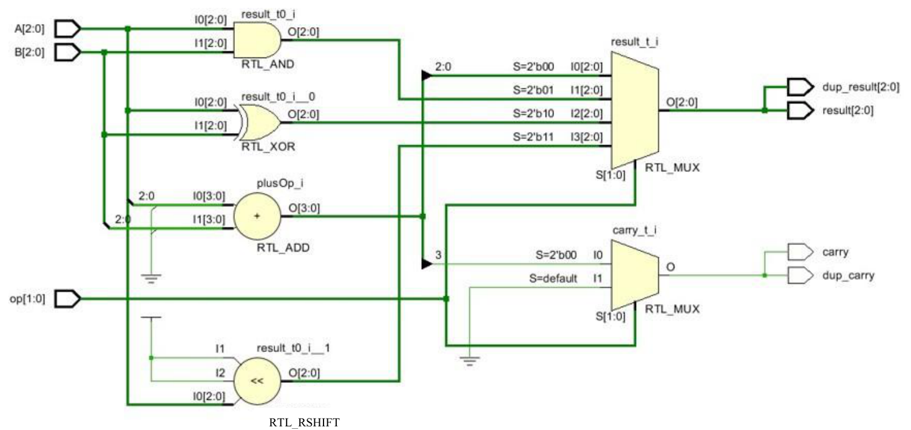
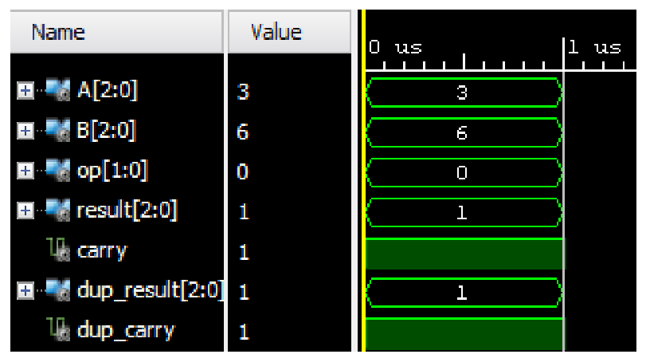
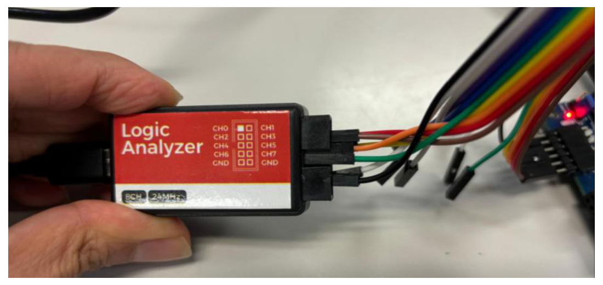
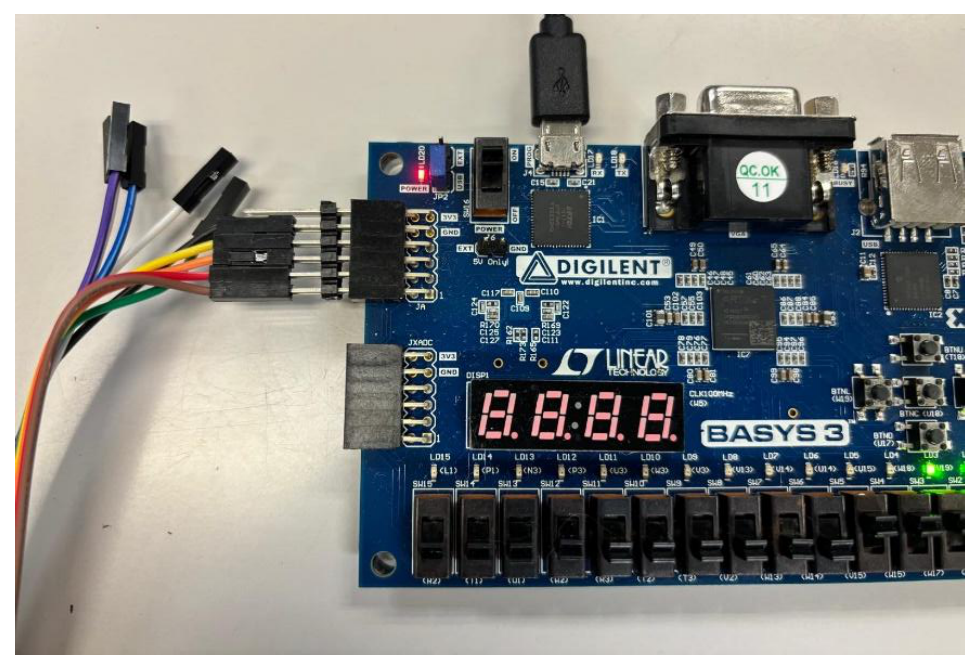
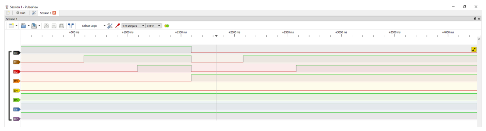

本实验的目标是设计一个简单的算术逻辑单元（ALU），用它复习组合逻辑设计，并练习 VHDL 中的类型转换、位切片与拼接。实验分为两部分：实验 1 设计并验证一个 3 位 ALU；实验 2 用逻辑分析仪观察 ALU 的内部信号。
完成本实验后，你应该能够：
本实验有 4 个检查点。检查点 1、2、4 需要向演示者展示；检查点 3 写在实验报告中，不需要现场演示。
本实验要设计一个 3 位 ALU。输入是 A[2:0]、B[2:0] 和操作码 op[1:0]；输出是 result[2:0] 和 carry。ALU 根据 op 执行表 1 中的一种运算。
| op[1:0] | 运算 | 说明 | carry |
|---|---|---|---|
| 00 | ADD | A 加 B | 由和决定 |
| 01 | AND | A 与 B 按位与 | 0 |
| 10 | XOR | A 与 B 按位异或 | 0 |
| 11 | SHR | A 逻辑右移一位 | 0 |
除了运算结果，ALU 还要输出两个“复制”信号 dup_result[2:0] 和 dup_carry。它们的值与 result、carry 相同，目的是把这些内部信号送到 JA 排针，方便逻辑分析仪观察；LED 仍然显示原来的结果和进位。
| 信号 | 引脚 | 板上元件 |
|---|---|---|
| A[2:0] | V17, V16, W16 | SW0, SW1, SW2 |
| B[2:0] | W17, W15, V15 | SW3, SW4, SW5 |
| op[1:0] | W14, W13 | SW6, SW7 |
| result[2:0] | U16, E19, U19 | LD0, LD1, LD2 |
| carry | V19 | LD3 |
| dup_result[2:0] | J1, L2, J2 | JA1, JA2, JA3 |
| dup_carry | G2 | JA4 |
下面的模板给出实体、信号和输出连接。运算部分需要你自己补全。注意模板只引用了 STD_LOGIC_1164；如果要直接对 STD_LOGIC_VECTOR 做加法，需要再引用 IEEE.STD_LOGIC_UNSIGNED.ALL 或 IEEE.NUMERIC_STD.ALL。
library IEEE;
use IEEE.STD_LOGIC_1164.ALL;
entity ALU is
Port ( A : in STD_LOGIC_VECTOR (2 downto 0);
B : in STD_LOGIC_VECTOR (2 downto 0);
op : in STD_LOGIC_VECTOR (1 downto 0);
result : out STD_LOGIC_VECTOR (2 downto 0);
carry : out STD_LOGIC;
dup_result : out STD_LOGIC_VECTOR (2 downto 0);
dup_carry : out STD_LOGIC);
end ALU;
architecture Behavioral of ALU is
signal result_t : STD_LOGIC_VECTOR (2 downto 0);
signal carry_t : STD_LOGIC;
begin
-- 在这里写运算逻辑：根据 op 选择 result_t 和 carry_t。
-- 例如：
-- tmp <= ('0' & A) + ('0' & B);
-- with op select
-- result_t <= tmp(2 downto 0) when "00",
-- A and B when "01",
-- A xor B when "10",
-- to_stdlogicvector(to_bitvector(A) srl 1) when others;
result <= result_t;
carry <= carry_t;
dup_result <= result_t;
dup_carry <= carry_t;
end Behavioral;

测试平台的实体端口列表为空，因为仿真不连接引脚。下面的模板给出元件声明、信号和进程框架；你需要用 A、B、op 的赋值和 wait for 产生激励。一次只改一组输入时，其他信号会保持上一次的值。
Library IEEE;
Use IEEE.STD_LOGIC_1164.ALL;
Entity ALU_tb is
end ALU_tb;
Architecture Behavioral of ALU_tb is
COMPONENT ALU is
Port ( A : in STD_LOGIC_VECTOR (2 DOWNTO 0);
B : in STD_LOGIC_VECTOR (2 DOWNTO 0);
op : in STD_LOGIC_VECTOR (1 DOWNTO 0);
result : out STD_LOGIC_VECTOR (2 DOWNTO 0);
carry : out STD_LOGIC;
dup_result : out STD_LOGIC_VECTOR (2 DOWNTO 0);
dup_carry : out STD_LOGIC);
END COMPONENT;
SIGNAL A : STD_LOGIC_VECTOR (2 DOWNTO 0);
SIGNAL B : STD_LOGIC_VECTOR (2 DOWNTO 0);
SIGNAL op : STD_LOGIC_VECTOR (1 DOWNTO 0);
SIGNAL result : STD_LOGIC_VECTOR (2 DOWNTO 0);
SIGNAL carry : STD_LOGIC;
SIGNAL dup_result : STD_LOGIC_VECTOR (2 DOWNTO 0);
SIGNAL dup_carry : STD_LOGIC;
begin
uut: ALU PORT MAP (A, B, op, result, carry, dup_result, dup_carry);
sigen: PROCESS
begin
-- 在这里给 A、B、op 赋值，并在每次变化后 wait for 10 ns。
wait;
end PROCESS sigen;
end Behavioral;
一个最简单的单值测试可以先令 A = "011"、B = "110"、op = "00"，运行后检查 3 + 6 = 9，即 result = 001、carry = 1。确认单值正确后，再在进程里加四段激励，分别覆盖 ADD、AND、XOR 和 SHR。

把单值扩展成四段激励后，预期值如表 3。四段结果互不相同，波形一眼就能看出运算有没有接错。
| 时间段 | op | 运算 | result | carry |
|---|---|---|---|---|
| 0–10 ns | 00 | ADD | 000 | 1 |
| 10–20 ns | 01 | AND | 001 | 0 |
| 20–30 ns | 10 | XOR | 110 | 0 |
| 30–40 ns | 11 | SHR | 010 | 0 |
本实验用逻辑分析仪观察 ALU 的 dup_result 和 dup_carry。这样可以直接看到每一位随时间的变化，而不只是看 LED 的最终值。




观察波形时，注意以下几件事：
报告应包含：
本中文版根据英文原版手册翻译并重新排版，图中的原始截图来自英文原版；如与英文原版有冲突，以英文原版为准。